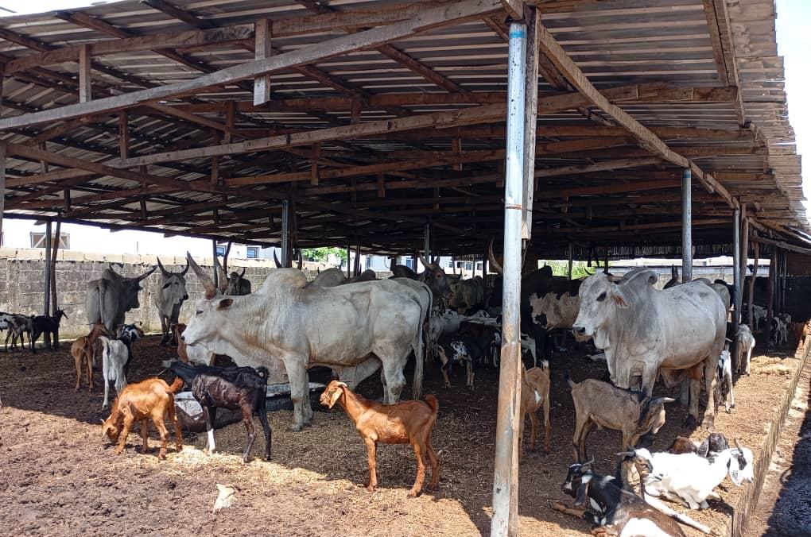

<section class="about-content">
    <div class="container">
      <div class="about-intro animate__animated animate__fadeIn">
        <span class="section-tag">About Us</span>
        <h2 class="section-title">Who We Are</h2>
        <div class="about-text">
          <p><strong>ABIS Group of Companies</strong> was established to mitigate the gap in the processing segment of the livestock value chain with a commitment to premium quality products and impeccable standards in Africa and beyond.</p>
          
          <p><strong>Our Lagos plant</strong> has a daily average beef processing capacity of <strong>6 tons, 6000 poultry birds, 500 tons of a variety of fish species, and an annual turnover of over 11.2 billion Naira</strong> positioning the firm as a trusted hub for premium food products in Nigeria. We have <strong>created over 400 direct jobs and another 3000 – 4000 indirect jobs in our current operation.</strong></p>
          
          <p><strong>Our Abuja Livestock Product Processing Facility,</strong> now under construction, is set to be a fully automated plant equipped with modern technologies, capable of concurrently processing an average of <strong>500 cattle daily, 400-600 tons of poultry, 1000 tons of a variety of fish species & 200 tons of sausages daily, 700-1000 direct jobs</strong> and over <strong>10,000 indirect jobs.</strong></p>
          
          <p>With a strong commitment to <strong>environmental responsibility,</strong> we have developed and incorporated sustainable waste management systems in our operations converting effluent to <strong>bio-gas,</strong> a clean source of energy to the plant hence, reducing the emission of harmful gases into the environment.</p>
        </div>
      </div>
  
      <div class="about-grid">
        <div class="about-card animate__animated animate__fadeInLeft">
          <h3>Nigerian Livestock Landscape</h3>
          <p>ABIS GROUP is spearheading a transformative initiative in livestock value-chain development. Despite Nigeria's livestock sector being valued at over ₦33 Trillion, it currently contributes less than 3% to the country's annual GDP. To address this untapped potential, ABIS GROUP is constructing a state-of-the-art Livestock Product Processing Facility in Abuja, designed to serve domestic and global markets, including the lucrative halal meat sector.</p>
        </div>
        
        <div class="about-card animate__animated animate__fadeInRight">
          <h3>Mission</h3>
          <p>To deliver healthy, hygienic and high-quality livestock products in consonance with Halal requirements while promoting responsible processing practices and minimizing environmental impact.</p>
        </div>
        
        <div class="about-card animate__animated animate__fadeInLeft">
          <h3>Vision</h3>
          <p>To be the foremost provider of organic and ethically sourced livestock products in Nigeria, recognized for our commitment to quality, sustainability, and community welfare.</p>
        </div>
        
        <div class="about-card animate__animated animate__fadeInRight">
          <h3>ABIS Group Subsidiaries</h3>
          <ul class="subsidiaries-list">
            <li><i class="fas fa-check-circle"></i> ABIS Star Livestock Processing Ltd</li>
            <li><i class="fas fa-check-circle"></i> ABIS Global Livestock Logistics Ltd</li>
            <li><i class="fas fa-check-circle"></i> ABIS Premium Livestock Processing Ltd</li>
            <li><i class="fas fa-check-circle"></i> ABIS Farms Mkt Limited</li>
            <li><i class="fas fa-check-circle"></i> Kwawel Nig Ltd</li>
            <li><i class="fas fa-check-circle"></i> Nelfachi Global Concept</li>
            <li><i class="fas fa-check-circle"></i> Atlantic Nominees Limited</li>
          </ul>
        </div>
      </div>
  
      <div class="about-gallery">
        <div class="gallery-item animate__animated animate__zoomIn">
          
        </div>
        <div class="gallery-item animate__animated animate__zoomIn" style="animation-delay: 0.3s;">
          
        </div>
      </div>
    </div>
  </section>